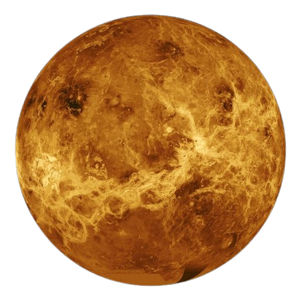

MERCURY
Is the closest planet to the Sun in our solar system. It is named after the Roman god Mercury,
who was the messenger of the gods and associated with speed due to the planet's fast orbit around
the Sun. Mercury's name reflects its swift movement across the sky, as it completes an orbit around
the Sun in just about 88 Earth days, the shortest of any planet in the solar system. Despite its
proximity to the Sun, Mercury has extreme temperature fluctuations, with temperatures reaching up to
800°F (427°C) during the day and dropping to -330°F (-201°C) at night, as it lacks a significant
atmosphere to retain heat.

VENUS
Is the second planet from the Sun. It is similar in size and composition to Earth, but has a
thick, toxic atmosphere that traps heat, making it the hottest planet in our solar system. Venus rotates
in the opposite direction to most planets, and its surface is covered by mountains, volcanoes, and large
plains of volcanic rock. The planet's extreme temperatures, high pressure, and sulfuric acid clouds
make it a hostile environment for life.
EARTH
Is the third planet from the Sun and the only known planet to support life. It has a rich
diversity of ecosystems, including forests, oceans, and deserts. Earth has a breathable atmosphere
and a stable climate, which has enabled the development of life. The planet orbits the Sun in about
365 days and has one natural satellite, the Moon, which influences tides and helps stabilize Earth's
axis tilt.
MARS
Mars is the fourth planet from the Sun and is often referred to as the "Red Planet" due to its reddish appearance,
which is caused by iron oxide (rust) on its surface. Mars is a terrestrial planet with a thin atmosphere, consisting
mainly of carbon dioxide. It has the tallest volcano in the solar system, Olympus Mons, and a massive canyon, Valles Marineris.
Mars has been a major focus in the search for extraterrestrial life, and scientists are studying its potential for human colonization.
JUPITER
Jupiter is the fifth planet from the Sun and the largest in our solar system. Known as the "King of the Planets,"
it has a diameter of about 86,881 miles (139,822 km). Jupiter's atmosphere is mostly hydrogen and helium, with
swirling clouds and powerful storms, including the famous Great Red Spot, a massive storm larger than Earth that
has been raging for centuries. The planet has at least 79 moons, including the four largest: Io, Europa, Ganymede,
and Callisto, known as the Galilean moons. Jupiter's immense gravitational force plays a key role in protecting
the inner planets from asteroid impacts.
SATURN
Saturn is the sixth planet from the Sun and is famous for its breathtaking ring system, the largest and most prominent in the solar system.
As a gas giant, it is composed primarily of hydrogen and helium, making it the second-largest planet but the least dense—it could float in water
if such a vast body of water existed. Saturn’s iconic rings are made of ice, rock, and dust, and the planet is orbited by more than 80 moons,
including Titan, which is larger than Mercury and has a thick atmosphere. Its atmosphere displays a yellowish hue and experiences extreme wind
speeds of up to 1,800 kilometers per hour near its equator.
URANUS
Uranus is the seventh planet from the Sun and is unique for its sideways rotation, as it orbits the Sun tipped over on its axis at an angle of about 98 degrees.
Known as an "ice giant," Uranus is primarily composed of hydrogen, helium, and methane, with the methane in its atmosphere giving the planet its pale blue-green color.
It is the coldest planet in the solar system, with minimum atmospheric temperatures dropping to around -371°F (-224°C). Uranus has faint rings and at least 27 known moons,
many of which are named after characters from Shakespearean plays. Discovered in 1781 by astronomer William Herschel, Uranus was the first planet found with a telescope,
expanding our understanding of the solar system. Its mysterious and tilted orientation, combined with its icy composition, makes Uranus a fascinating subject for scientific
study.
NEPTUNE
Neptune is the eighth and farthest planet from the Sun in our solar system, known for its deep blue color caused by the presence of methane
in its atmosphere. Classified as an "ice giant," Neptune is primarily composed of hydrogen, helium, and ices like water, ammonia, and methane.
It is renowned for its intense weather systems, with the fastest winds recorded in the solar system, reaching speeds of up to 1,200 miles per
hour (1,931 kilometers per hour). Neptune has a faint ring system and 14 known moons, the largest of which is Triton, an icy world with geysers
that spew nitrogen gas. Discovered in 1846, Neptune was the first planet located through mathematical predictions rather than direct observation.
Its striking blue appearance and dynamic atmosphere make Neptune a captivating planet for exploration and study.